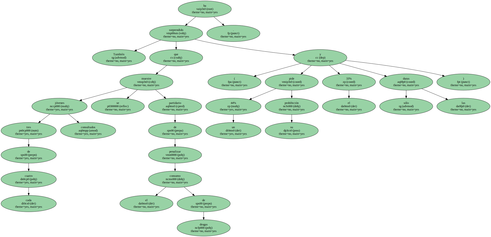
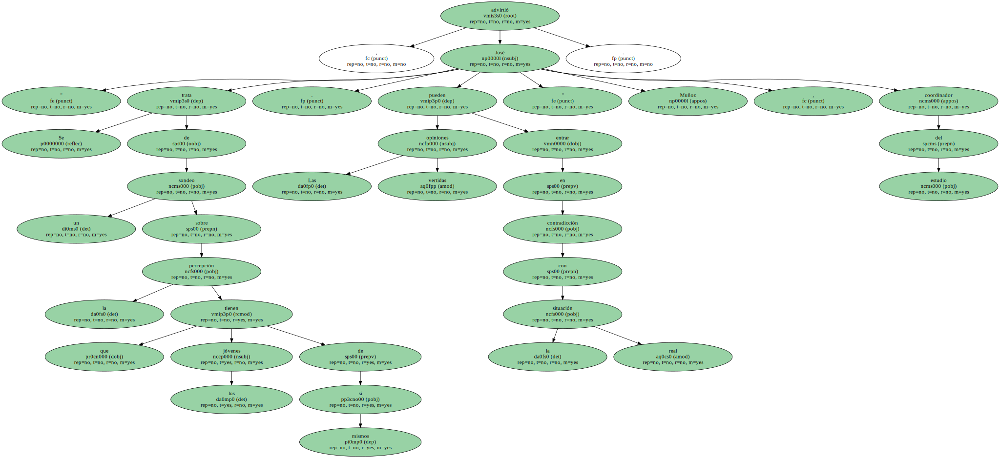
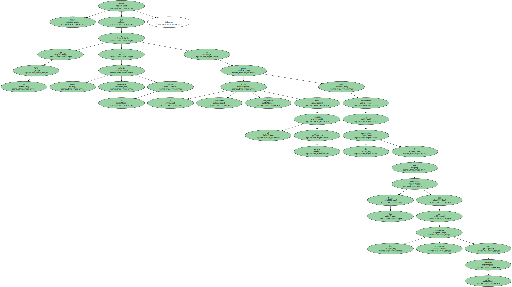

También ha sorprendido que tres de cada cuatro jóvenes consultados se muestre partidario de penalizar el consumo de drogas ( un 44% pide su prohibición y el 33% sólo las duras ).
El dato contrasta con los resultados de la última encuesta del Plan Nacional sobre Drogas , que pone de manifiesto que es precisamente este grupo de edad el que más consume , especialmente entre 20 y 29 años , cannabis , éxtasis y cocaína.

" Se trata de un sondeo sobre la percepción que los jóvenes tienen de sí mismos . Las opiniones vertidas pueden entrar en contradicción con la situación real " , advirtió José Muñoz , coordinador del estudio.
Muñoz apuntó que un 20% cree que nunca debería penalizarse su consumo y que la actitud intolerante mayoritaria hacia el consumo de drogas puede estar relacionada con la percepción de que las drogas constituyen uno de los principales problemas de la sociedad.
